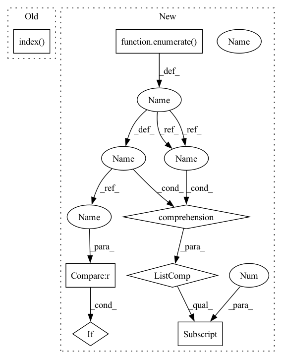

Pattern ID :6152
Before Change
if text2tokens[token_start_index:token_start_index + ent_token_len] == ent2token:
break
else:
token_start_index = text2tokens.index( ent2token[0], token_start_index + 1)
except ValueError:
print(f"[{ent}] 无法对应到 [{text}] 的token_span，已丢弃")
token_start_index = -1
After Change
// 寻找ent的token_span
token_start_indexs = [i for i,v in enumerate(text2tokens) if v==ent2token[0]]
token_end_indexs = [i for i,v in enumerate(text2tokens) if v==ent2token[-1]]
token_start_index = list(filter(lambda x:token2char_span_mapping[x][0] == ent_span[0], token_start_indexs))
token_end_index = list(filter(lambda x:token2char_span_mapping[x][-1]-1 == ent_span[1], token_end_indexs)) // token2char_span_mapping[x][-1]-1 减1是因为原始的char_span是闭区间，而token2char_span是开区间
if len(token_start_index)==0 or len(token_end_index)==0:
print(f"[{ent}] 无法对应到 [{text}] 的token_span，已丢弃")
continue
token_span = (token_start_index[0], token_end_index[0] , ent_span[2])
ent2token_spans.append(token_span)
In pattern: SUPERPATTERN
Frequency: 3
Non-data size: 7
Instances Fragment ID: 21142802
Project Name: gaohongkui/globalpointer_pytorch
Commit Name: 5146e4d180d865b94c8e0d173320f021df21498d
Time: 2021-07-31
Author: 1427224680@qq.com
File Name: common/utils.py
M Class Name: Preprocessor
N Class Name: Preprocessor
M Method Name: get_ent2token_spans(3)
N Method Name: get_ent2token_spans(3)
M Parent Class: object
N Parent Class: object
M File Name: common/utils.py
N File Name: common/utils.py
M Start Line: 42
M End Line: 68
N Start Line: 42
N End Line: 58
Before Change
token_start_index = 0 if ent_token_len > 0 else - 1
while token_start_index != -1:
try:
token_start_index = text2tokens.index( ent2token[0], token_start_index)
if text2tokens[token_start_index:token_start_index + ent_token_len] == ent2token:
break
else:
token_start_index = text2tokens.index(ent2token[0], token_start_index + 1)After Change
ent2token = self.tokenizer.tokenize(ent, add_special_tokens=False)
// 寻找ent的token_span
token_start_indexs = [i for i,v in enumerate(text2tokens) if v==ent2token[0]]
token_end_indexs = [i for i,v in enumerate(text2tokens) if v==ent2token[-1]]
token_start_index = list(filter(lambda x:token2char_span_mapping[x][0] == ent_span[0], token_start_indexs))
token_end_index = list(filter(lambda x:token2char_span_mapping[x][-1]-1 == ent_span[1], token_end_indexs)) // token2char_span_mapping[x][-1]-1 减1是因为原始的char_span是闭区间，而token2char_span是开区间
if len(token_start_index)==0 or len(token_end_index)==0:
print(f"[{ent}] 无法对应到 [{text}] 的token_span，已丢弃")
continue
token_span = (token_start_index[0] , token_end_index[0], ent_span[2])
ent2token_spans.append(token_span)
Fragment ID: 21142803
Project Name: gaohongkui/globalpointer_pytorch
Commit Name: 5146e4d180d865b94c8e0d173320f021df21498d
Time: 2021-07-31
Author: 1427224680@qq.com
File Name: common/utils.py
M Class Name: Preprocessor
N Class Name: Preprocessor
M Method Name: get_ent2token_spans(3)
N Method Name: get_ent2token_spans(3)
M Parent Class: object
N Parent Class: object
M File Name: common/utils.py
N File Name: common/utils.py
M Start Line: 42
M End Line: 68
N Start Line: 42
N End Line: 58
Before Change
else:
features = data.features
ix_time = features.index( "dom_time")
hit_times = data.x[:, ix_time]
// Scale up dom_index to make sure clusters are well separated
times_and_domids = torch.stack(After Change
else:
features = data.features
ix_time = [idx for idx, s in enumerate(features) if "time" in s][0] // features.index("dom_time")
hit_times = data.x[:, ix_time]
// Scale up dom_index to make sure clusters are well separated Fragment ID: 21142800
Project Name: icecube/graphnet
Commit Name: 72566b509bf59d08ef7610194d6760b5852b7686
Time: 2023-01-23
Author: askerosted@gmail.com
File Name: src/graphnet/models/coarsening.py
M Class Name: DOMAndTimeWindowCoarsening
N Class Name: DOMAndTimeWindowCoarsening
M Method Name: _perform_clustering(2)
N Method Name: _perform_clustering(2)
M Parent Class: Coarsening
N Parent Class: Coarsening
M File Name: src/graphnet/models/coarsening.py
N File Name: src/graphnet/models/coarsening.py
M Start Line: 283
M End Line: 290
N Start Line: 293
N End Line: 300